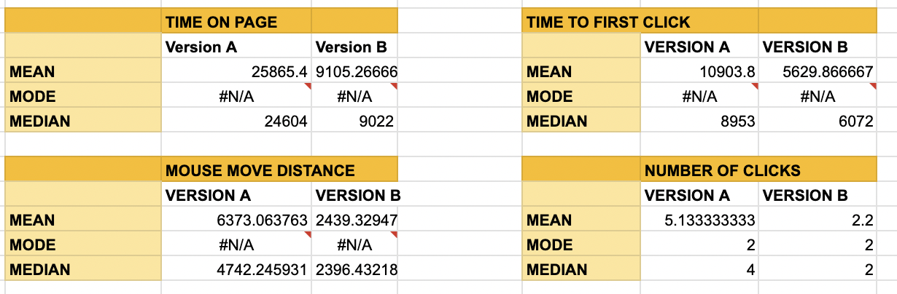

Below is a screenshot of the changes I made to the webpage. Notably, I created a border/box around each doctor's information including the buttons to click to select an appointmnet. Additionally, I changed the color of the buttons from a blue light blue to a bright blue to indicate that they were clickable.
Misclick rate: the frequency with which users click something else on the page before finding the correct button for the task Null Hypothesis: The distribution for misclicks is the same Null Predictions: I predict that I will end up rejecting my null hypothesis because I believe the improvements I made in version B made the page easier to navigate, resulting in fewer misclicks. Alternative: The misclick rates are different from versions A and B Reasoning: I predict that my misclick rate will be different from versions A and B because of the changes I made to the site. I created a box around each doctor’s information so it was easier to see when each doctor’s information began and ended, and I changed the color of the buttons to a brighter blue that looks more clickable than the pale blue in version A. These changes make it easier for users to see the groupings of each doctor’s appointment information and easier for users to understand that the appointment button is clickable.
Time on page: time spent on the webpage for each user group Null Hypothesis: Users will spend more time on version B than A Null Predictions: I predict that I will reject the null hypothesis because I believe improvements I made in version B will make the user experience more efficient and faster. Alternative: Users will spend less time on version B than version A Reasoning: I predict users will spend less time on version B because the changes I made in version B make the site move navigable and easier to understand. Particularly, the grouping and stronger organization of the doctor and appointment information will allow users to complete the task quicker.
Mouse Travel Distance: the distance the user's mouse traveled around the page before completing the task Null Hypothesis: Users will drag their mouse a larger distance in version B than in version A Null Predictions: I predict that I will reject my null hypothesis because the improvements I made in version B will allow the users to more quickly navigate the page, causing them to use their mouse more efficiently and move around less. Alternative: Users will drag their mouse over a smaller distance in version B than in version A Reasoning: The boxes I created around the doctor's appointment information make it easier for users to discern between different doctors. Once users have identified the correct doctor, the box also makes it easier for them to select the button in the doctor’s appointment, minimizing mouse movements
Describe which test you chose and why:
I chose the chi-squared test to measure the distribution of misclicks because it is a categorical variable where I am discerning if version A’s misclick frequency is different from version B’s.
State whether the difference between versions A and B with respect to the metric is statistically significant The difference in the misclick rate between versions A and B is statistically significant because of the factors indicated in the next bullet. Include a description of any important values (i.e., t-score, p-value, degrees of freedom, chi-squared statistic) calculated from the test and what they tell us My p-value was 0.316% which means there is a 0.316% chance that versions A and B have the same distribution of misclicks. Because this probability is so small, it is highly unlikely that versions A and B would have the same misclick rate in this random scenario. The degree of freedom in this test is 1 because there is only one category to discern: users misclicks. The chi-squared value of 8.7 represents the magnitude of the difference between the distribution between versions A and B. A magnitude difference of 8.7 is extreme and statistically significant because it rejects the null hypothesis that the distribution of misclicks would be the same since the distribution of misclicks in versions A and B is high at 8.7.
Conclude whether you reject or fail to reject your null hypothesis: I reject my null hypothesis because my p-value of 0.316% suggests that it is highly unlikely that version A and B have the same misclick rate. The chi-squared value of 8.7, a high standard deviation also supports that there is a significant difference in the distribution of misclicks among the two versions.
Describe which test you chose and why
I chose the one-tailed t-test because my hypothesis is testing whether the time spent on version B was less than that spent on version A.
State whether the difference between versions A and B with respect to the metric is statistically significant. The difference in the time spent on versions A and B is statistically significant and supports my Alternative Hypothesis because of the data values listed in the next bullet. Include a description of any important values (i.e., t-score, p-value, degrees of freedom, chi-squared statistic) calculated from the test and what they tell us
T-score: The standardized difference between time users spent on version A and B being around 5 standard deviations from the mean indicates significant results. Because this is a standardized measure the t-score value of 5 is large, indicating there was a big difference between the average time users spent on version A and B. P value: In repeated trials the probability that versions A and B are the same is virtually 0 at .0052%, which helps support the conclusion that the two distributions are not the same. Degrees of freedom: The value of 16 in my degrees of freedom represents the number of random trials. Variance: Since the variance data is calculated in milliseconds, I divided it by a million and took the square root to find the time users spent on the page in seconds. The average variance for time users spent on the page in version A was 12.28 seconds compared with 3.48 seconds in version B. This is a statistically significant result because it indicates that the changes I made in version B resulted in a 71% reduction in the variance of times users spent completing the task. The smaller variance in version B compared to version A means that users on average spent similar times on the page in version B than in version A. The wider range of the variance in version A means there was a greater spread between time users spent on the page suggesting users had different understandings and needed more time to navigate the page in version A than B Importantly, the bright blue buttons I created in version B looked more clickable than the pale buttons in version A. Additionally, the boxes I created around each doctor’s information made it easier for users to identify the doctor they were looking for and make an appointment much quicker than in version A.
Conclude whether you reject or fail to reject your null hypothesis
The significance difference in variance times and the t-score representing a large standard deviation between versions A and B suggest statistically significant support that rejects my null hypothesis. Additionally, my incredibly low p-value concludes that the probability that the time spent on versions A and B in repeated trials would be similar is highly unlikely.
Describe which test you chose and why
I chose the one-tailed t-test because I was comparing whether the mouse distance was bigger or smaller in version A or B.
State whether the difference between versions A and B with respect to the metric is statistically significant
The difference between the distance users’ mouses travel in versions A and B is statistically significant. See data support in the next bullet point.
Include a description of any important values (i.e., t-score, p-value, degrees of freedom, chi-squared statistic) calculated from the test and what they tell us
The T-score of 3.72 suggests that the difference in the standard deviation of distance the most traveled in version A and B is large (since it is greater than 2.5 standard deviations from the mean). This suggests the changes in version B were statistically significant in affecting the mouse the user’s mouse traveled. Because my changes grouped each doctor’s information and appointment buttons together in a box, the user could more easily identify the grouping of the doctor’s information with the button and move their mouse more intentionally to click. The p-value of 0.1% is statistically significant because it suggests that the probability that the distance the user’s mouse traveled in versions A and B did not change is very unlikely. This is important because it highlights that the changes I made to the design in version B were very likely to reduce the distance the user’s mouse traveled before completing the task. The significant difference in the variance of users' mouse distance in versions A and B also supports my Alternative hypothesis that the changes I made in version B shortened the distance the user’s mouse traveled. The variance in version A was 16548298.43 compared to 168542.86 in version B. The variance in version A is about 98x greater than the variance in B, which is statistically significant in showcasing that there is a much greater spread from the mean of how users moved their mouses in version A than in version B. The smaller spread of mouse movement in version B means that users on average moved their mouses a similar amount to each other on the page, suggesting that the changes in my design in version B helped create a flow that was logical to users and in similar ways. The degree of freedom of 14.28 shows that there were 14 repeated trials in the sample, meaning that over these different trials, the high standard deviation between mouse clicks, significant difference in variance in versions A and B, and low p-value of 0.1%, help reject the null that users in version B moved their mouse around more than users in version A.
Conclude whether you reject or fail to reject your null hypothesis
I collected 15 trials with data points on time spent on the webpage, misclick rate, distance the mouse traveled, the time until the first click, the number of clicks users made, the user's success if they completed the trial. Below is a chart displaying the data on mean, median, and mode values of versions A and B.
The average time users spent on the page in version A was 25865 milliseconds compared with 10903 milliseconds in version B. This means that users spent 2.4x as long navigating version A as they did on version B, suggesting that my changes more than halved the time the user spent navigating the page. The median time spent on the page in version A was 24604 vs 9022 in version B, another dramatic difference. The improvements in version B also reduced the average first click time from 10903 milliseconds in version A to 5629 milliseconds seconds in version B, meaning users were on average 5.3 seconds quicker at making their first click in version B, meaning the changes allowed users to navigate to the correct appointment quicker. The difference in the median time of clicking from version A to version B is 2.8 seconds, which is 2.5 seconds less than the average of 5.3 seconds which means that some users in version B took a few seconds longer to make their first click than most. The average distance the user's mouse moved in version A was 2.6x greater than in version B, meaning the changes I made in version B allowed users to navigate more quickly and more efficiently. There is a marginal difference in the mean and mode of the distance the mouse traveled in version B which suggests that users moved their mouses at similar distances. The median and mode of the distance the mouse traveled in version A has a much more significant difference suggesting that users had a wider range of understanding of how to navigate the page in version A. This is most likely because the boxes I added around the doctor's information and appointment buttons in version B guided users’ mouse movements and created less of a range in where they might have moved their mouses to find the appointment. Lastly, the data on the number of clicks in versions A and B is a testament to the efficiency of my changes in version B. In version A, the average number of clicks was 5, the median was 4, and mode was 2 meaning 2 was the most common number of clicks. In version B, there is barely a difference between the mean, mode, and median with 2.2, 2, and 2, clicks respectively. This means that in version A users were less certain about where to click than in version B, where almost all users made no incorrect clicks and made the 2 correct clicks. Overall, this data suggests the changes in version B made it clearer for users how to navigate to the correct appointment and where they should click. Users in version B navigated the page more quickly and with fewer clicks and mouse drags than users in version A and rejects the null hypothesis I made earlier while supporting my alternatives.